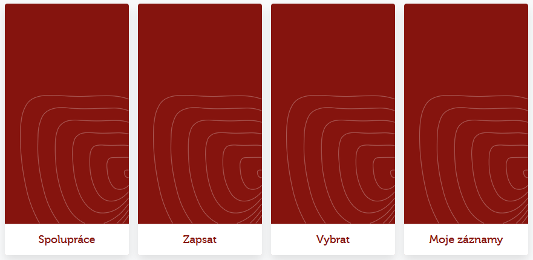
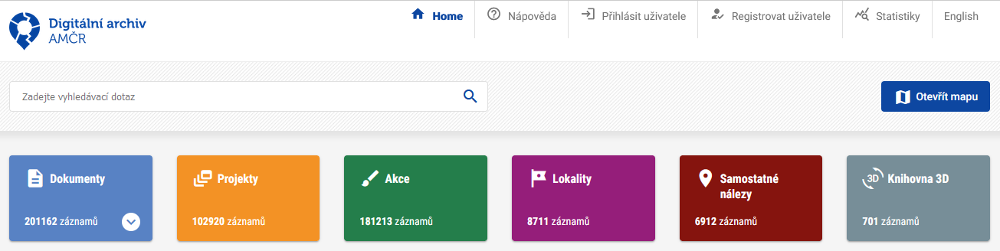

Návod pro spolupracovníky
Základní principy spolupráce a pokyny pro používání AMČR-PAS amatérskými spolupracovníky
Původně zveřejněno jako:
Pajdla P., Novák D., Mařík J., Antal R., Komoróczy B., Lečbychová O. a Chlup T. 2021: AMČR-PAS Základní principy používání a návod pro spolupracovníky. Zenodo. doi:10.5281/zenodo.4114081.
AMČR-PAS (Portál amatérských spolupracovníků a evidence samostatných nálezů) byl vytvořen pro podporu součinnosti dobrovolných spolupracovníků a oprávněných organizací při provádění archeologických výzkumů metodou povrchové prospekce, včetně využití detektorů kovů. Úkolem AMČR-PAS je vytvořit podmínky pro transparentnost, formalizaci a zároveň usnadnění této spolupráce při současném respektování platných zákonných norem ČR.
Modul AMČR-PAS naleznete po přihlášení na https://amcr.aiscr.cz/.
Webovou stránku AMČR-PAS pak zde http://www.archeologickamapa.cz/pas.
Záznam ze školení
Záznam z periodického školení Portálu amatérských spolupracovníků a evidence samostatných nálezů Archeologické mapy ČR pro širokou veřejnost, které se konalo dne 4. 12. 2024. Prezentace je dostupná zde.
Postup ve zkratce
Principy spolupráce
Modul AMČR-PAS je založen na spolupráci amatérských badatelů s archeology z organizací s oprávněním provádět archeologický výzkum. Prvním krokem je tedy nalézt v regionu, kde chcete svoji badatelskou činnost provozovat, organizaci s oprávněním provádět archeologický výzkum, kde bude archeolog takové spolupráci nakloněn a ochoten Vaši amatérskou badatelskou činnost zaštítit. Pokud dojde ke shodě na vzájemné spolupráci, vstupuje do celého procesu modul AMČR-PAS, který usnadní a zformalizuje většinu kroků amatérského výzkumu.
Organizace oprávněné provádět archeologické výzkumy lze vyhledávat v aplikaci Mapa archeologických organizací.
Vyhledávání archeologických nálezů pomocí detektoru kovů je jednou z metod archeologického výzkumu. Archeologický výzkum může být prováděn výhradně organizací k tomu oprávněnou a na území, které je vymezeno platnou dohodou dané organizace s AV ČR. Každý výzkum musí být registrován v Archeologické mapě České republiky (AMČR) ve formě projektu, který má svého vedoucího, který je pracovníkem dané oprávněné organizace.
Veškeré archeologické nálezy a jejich nálezové okolnosti musí být evidovány. V ideálním případě by základní evidence měla proběhnout přímo v místě nálezu. V případě technických překážek (nedostupné internetové připojení, spolupracovník není vybaven chytrým telefonem apod.) by mělo k evidenci nálezu dojít bez zbytečných odkladů po návratu z terénu. Jelikož archeologické nálezy jsou učiněné v režimu archeologického výzkumu, je vyloučeno požadovat výplatu odměny podle § 23 památkového zákona.
Nutným předpokladem navázání spolupráce s oprávněnou organizací je účast na školení, jehož obsahem by měly být právní podmínky celého systému, metodika práce v terénu, dokumentace nálezů a způsob užívání AMČR-PAS.
Zásady zodpovědného hledání s detektory kovů jsou popsány v následujícím videu a dokumentu .
Modul AMČR-PAS
Registrace a přihlášení
Pro přihlášení do aplikace slouží emailová adresa a heslo. Nutná je předchozí registrace.
Povinnými položkami pro registraci jsou:
- jméno;
- příjmení;
- platná emailová adresa;
- organizace – pro veřejnost obvykle
[amatérský spolupracovník].
Na uvedený email je automaticky odeslána ověřovací zpráva s odkazem pro potvrzení registrace. Po potvrzení je účet aktivován správcem systému. Aktivace účtů obvykle probíhá v běžné pracovní době.
Více viz sekce Uživatelské účty.
Úvodní obrazovka
Modul AMČR-PAS je jednou ze součástí Archeologického informačního systému ČR (AIS ČR), resp. Archeologické mapy ČR (AMČR). Samotný modul AMČR-PAS se skládá z několika karet:

- Spolupráce: správa spolupráce s archeology;
- Zapsat: zápis nového nálezu;
- Vybrat: výběr mých nálezů dle zadaných kritérií;
- Moje záznamy: výčet nálezů, které jsem zaevidoval.
Spolupráce
Na kartě Spolupráce je nutné nejprve požádat archeologa o spolupráci. Tím vznikne vazba mezi archeologem a Vámi, jakožto spolupracovníkem. Pro navázání spolupráce je nutné znát email daného archeologa pod kterým je registrován v systému AMČR.
Po potvrzení spolupráce archeolog vytvoří Projekt, pod kterým budou Vaše nálezy evidovány. Pro další postup je nutné, aby Vám archeolog sdělil číslo projektu, pod kterým budete své nálezy evidovat.
Zapsat
Karta Zapsat slouží k zápisu samotných nálezů. Ten je možný jak přímo v terénu (aplikace spuštěná přímo v prohlížeči v mobilním telefonu), tak zpětně. V terénu doporučujeme provést následující kroky:
- zaměřit polohu nálezu,
- zapsat hloubku nálezu,
- do pole
Poznámka / bližší popisuvést údaje o kontextu nálezu.
Pro prvotní zápis nového nálezu musím ze seznamu vybrat relevantní číslo projektu (jedná se o jediný údaj bezpodmínečně nutný pro první uložení nálezu do systému).
Po uložení nálezu do systému je pro nález vygenerován unikátní identifikátor odvozený od čísla souvisejícího projektu a nález je ve stavu Rozepsaný, viz časová osa stavů v záhlaví záznamu.
Detaly nálezu mohu upravit po kliknutí na ikonu tužky (Upravit) v záhlaví karty dané sekce. Je nutné zadat následující údaje:
- Identifikuji nálezce (tlačítko
+slouží k přidání chybějícího jména do hesláře). Pokud nechci své jméno u nálezu zveřejnit, lze zvolitanonym. - Z kalendáře vyberu datum nálezu.
- Specifikuji nálezové okolnosti a hloubku nálezu.
- Určím přesnou lokalizaci místa nálezu. Místo nálezu mohu určit několika způsoby:
- Ručním zápisem geografických souřadnic. Akceptovány jsou souřadnice:
- WGS-84 uváděné v decimálních stupních, např.
50.0903260, 14.4090983 - S-JTSK uváděné v záporných hodnotách v metrech, např.
-597268, -1161521.
- WGS-84 uváděné v decimálních stupních, např.
- V případě práce v terénu s telefonem vybaveným GPS lokalizací pomocí tlačítka
Současná poloha. Pro tuto funkci je nutné povolit v prohlížeči přístup k polohovým údajům zařízení, které používáte. - Přiblížením v mapě a vybráním přesného bodu kliknutím na mapový podklad.
- Ručním zápisem geografických souřadnic. Akceptovány jsou souřadnice:
- Přidám detailní popis lokalizace, např. formou parc. č., pomístního názvu (název trati, ulice, polohy aj.). Prosím dodržte následující formát zápisu: Poloha, (parc. č.)
Již po prvním uložení změn ve formuláři dojde k přidělení identifikátoru nálezu, který je viditelný v horní části obrazovky. Pod tímto ID bude nález navždy evidován a je vhodné jej využívat např. při označování nálezů v sáčcích atp.
Popis nálezu
V části Popis nálezu lze specifikovat dataci nálezu, typ předmětu atd. Vyplnění této části je částečně povinné (období, nález a materiál), informace však reviduje a doplní archeolog v další fázi zpracování.
Přidání fotografie
Klíčovým krokem po uložení celého záznamu je přiložit fotodokumentaci nálezové situace a předmětu, ideálně i s měřítkem. Akceptovány jsou fotografie ve formátu JPG, PNG, TIFF do maximální velikosti 100 MB. Není tedy třeba fotky komprimovat nebo zmenšovat. Pokud si nejste jistí, jak předměty správně dokumentovat, postupujte dle našeho tutoriálu pro fotografickou dokumentaci nálezů. Nahrané fotografie přechází do vlastnictví správce a nadále jsou chráněny licencí Creative Commons Attribution Non-commercial 4.0 Int. (CC BY-NC 4.0).
Fotografie musí splňovat archeologický dokumentační standard. Tím rozumějme kolmé a šikmé snímky předmětu tak, aby zachycovaly celkovou podobu předmětu. Je rovněž vhodné připojit i fotografie nálezových kontextů. Fotografie dokumentující předmět před nahráním ořízněte a natočte tak, aby osy měřítka a předmětu kopírovaly svislou a vodorovnou rovinu osy fotografie.
Fotografie lze přiložit pomocí tlačítka Nahrát soubory v horní liště karty pro sekci Fotografie.
Odeslání záznamu
Po vyplnění všech povinných údajů (pole označená žlutým ohraničením) a nahrání fotografie je možné záznam odeslat archeologovi pomocí tlačítka Odeslat. V tuto chvíli se nález odešle archeologovi, se kterým máte navázánu spolupráci a pod jehož číslem projektu byl nález zapsán.
Ve chvíli, kdy dojde k osobní schůzce s daným archeologem a jsou mu předány nálezy, archeolog potvrdí jejich převzetí, případně opraví informace o dataci, typu předmětu atd. Také určí, jak veřejně budou informace o daném nálezu přístupné (např. v případě vzácných nálezů či ohrožené lokality se může rozhodnout informace o poloze nálezu nezpřístupnit).
Moje zázany a Vybrat
Karta Moje záznamy nabízí výpis veškerých vašich nálezů. Toho využijete při uložení rozpracovaného záznamu v terénu s myšlenkou jeho dokončení, např. přidání detailnější fotky aj., později.
Karta Vybrat pak nabízí multikriteriální vyhledávání ve vašich a všech archivovaných nálezech.
Nález v Digitálním archivu AMČR

Po odeslání záznamu nálezu jej potvrdí osoba pověřená archivací detektorových nálezů na příslušném Archeologickém ústavu av čr. Následně je záznam zveřejněn v Digitálním archivu AMČR v kategorii Samostatné nálezy. Zde jsou zveřejněny všechny archivované nálezy evidované v modulu AMČR-PAS, jejich lokalizace však může být z důvodu ochrany archeologického dědictví zobecněna na okres, v němž byl daný nález evidován.